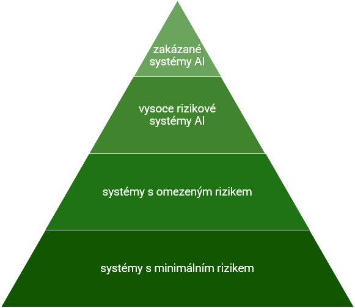

legální definice
Nařízení o umělé inteligenci
AI Act
Nařízení Evropského parlamentu a Rady (EU) 2024/1689 o umělé inteligenci je prvním komplexním právním rámcem, který v EU stanovuje jednotná pravidla pro vývoj, uvádění na trh a používání systémů AI. Od 1. srpna 2024 je v platnosti a jeho povinnosti nabíhají postupně. Jádrem je přístup založený na riziku: čím větší dopad systému na zdraví, bezpečnost či základní práva, tím přísnější požadavky na návrh, dokumentaci a dohled. Pro veřejnou správu jde o praktickou mapu povinností – od posouzení dopadů na základní práva (FRIA) a nastavení lidského dohledu až po evidenci, transparentní komunikaci a smluvní zajištění odpovědnosti dodavatelů.
Nařízení o umělé inteligenci je Nařízení Evropského parlamentu a Rady (EU) 2024/1689 ze dne 13. června 2024, kterým se stanoví harmonizovaná pravidla pro umělou inteligenci, tzv. akt o umělé inteligemci, stanovující harmonizovaná pravidla pro vývoj, uvádění na trh a využívání systémů umělé inteligence v Evropské unii. Zavádí povinnosti pro jednotlivé role v životním cyklu AI, klasifikaci systémů podle rizika a opatření na ochranu základních práv.
Rychlé shrnutí pro veřejnost
AI Act chrání občany před škodlivým či diskriminačním použitím AI a posiluje důvěru v digitální služby tím, že zavádí srozumitelná pravidla pro poskytovatele i uživatele systémů. Rozlišuje zakázané, vysoce rizikové, omezené a nízkorizikové aplikace a každé kategorii přiřazuje odpovídající povinnosti. Působí nejen na subjekty v EU, ale i na ty ze třetích zemí, pokud jejich systémy cílí na evropský trh. Porušení může vést k významným sankcím, takže prevence a průkaznost souladu jsou klíčové.
Jak AI Act pracuje s rizikem
Regulace rozlišuje čtyři patra. Zakázané praktiky (čl. 5) jsou v demokratickém právním řádu nepřijatelné a zahrnují zejména sociální skórování osob, podprahovou manipulaci a plošné či neadresné biometrické sledování. Vysoké riziko (čl. 6–29, příloha III) představují systémy, které mohou zásadně ovlivnit životní situace lidí – typicky v oblasti zaměstnání, vzdělávání, zdravotnictví, justice, migrace nebo správy kritické infrastruktury. Tyto systémy jsou přípustné, ale podléhají přísným povinnostem: řízení rizik, technické dokumentaci, testování přesnosti a robustnosti, zajištění lidského dohledu a v případech stanovených nařízením také registraci do evropské databáze. Omezené riziko cílí zejména na transparentnost vůči uživateli (např. jasné označení, že komunikuje s chatbotem, nebo že obsah je synteticky vytvořen). Nízké riziko nepodléhá zvláštní regulaci AI Actem, ale i zde platí obecné právní předpisy jako ochrana osobních údajů, autorské či spotřebitelské právo.
Role v životním cyklu AI
AI Act rozlišuje čtyři klíčové role v dodavatelském řetězci. Poskytovatel (provider) navrhuje a vyvíjí systém, uvádí jej na trh a nese hlavní odpovědnost za prokázání shody – zejména prostřednictvím systému řízení rizik, technické dokumentace a testování. Dovozce (importer) odpovídá za uvedení systému ze třetí země na trh EU a ověřuje, že jsou splněny požadavky. Distributor systém v EU dále nabízí či dodává odběratelům a musí respektovat režim shody. Zavádějící subjekt (deployer) systém používá v praxi – ve veřejné správě typicky úřad či instituce – a zajišťuje lidský dohled, školení uživatelů, evidenci a u vysoce rizikových systémů také provedení FRIA před nasazením.
GPAI – obecné modely umělé inteligence
Vedle účelově vymezených systémů přináší AI Act režim pro General Purpose AI (GPAI), tedy univerzální modely využitelné v celé škále aplikací (např. velké jazykové modely). Poskytovatelé GPAI mají povinnost popsat architekturu a omezení modelu, zveřejnit souhrny tréninkových dat a respektovat autorskoprávní pravidla, zejména TDM opt-out. U nejvýkonnějších modelů se systémovým rizikem se přidávají nároky na testování bezpečnosti a mitigaci rizik. Pro veřejnou správu to prakticky znamená promítnout tyto povinnosti do smluv a přejímky, a to i v případě, že úřad využívá GPAI nepřímo prostřednictvím služeb dodavatele.
Co AI Act ukládá veřejné správě
Úřady se nejčastěji ocitají v roli nasazovatele a jejich hlavní odpovědností je používat systém dle návodu, zajistit lidský dohled a školení obsluhy, vést evidenci používání a včas řešit incidenty. Pokud jde o systém vysokého rizika, provádí se před nasazením FRIA – posouzení dopadů na základní práva dotčených osob. FRIA rozšiřuje optiku známé DPIA z GDPR a není redukovaná jen na ochranu osobních údajů: vyhodnocuje rovněž rizika diskriminace, přiměřenosti, vysvětlitelnosti či přístupu k nápravě. V oblasti veřejných zakázek je vhodné smluvně vynutit dodání technické dokumentace, umožnit audit a přístup k logům, stanovit požadavky na kvalitu, bezpečnost a testování, a vymezit proces hlášení závažných incidentů.
Jak AI Act promítnout do praxe úřadu
Úspěšná implementace připomíná zavádění GDPR: je to kontinuální práce, nikoli jednorázový projekt. V praxi se vyplatí postupovat v logických krocích – nejprve zmapovat, kde se AI používá nebo plánuje; poté systémy přiřadit do rizikových kategorií; nastavit governance (odpovědnosti, schvalování změn modelu, lidský dohled a provozní procesy); připravit dokumentaci včetně návodu k použití, záznamů o datech a testech; a nakonec zajistit provozní režim s logováním, monitoringem po nasazení, hlášením incidentů a pravidelnými přezkumy.
Na co si dát pozor
- Přechodné lhůty – zákazy čl. 5 od 2. 2. 2025; GPAI od 2. 8. 2025; hlavní režim vysokého rizika od 2. 8. 2026; pro největší GPAI očekávané požadavky v roce 2027.
- Harmonizované normy a společné specifikace – usnadní prokázání shody (dokumentace, testování, metriky).
- Vztah k GDPR – AI Act je bez dotčení ochrany osobních údajů; DPIA a FRIA se často dělají souběžně.
- Dodavatelský řetězec – smluvně zajistit auditovatelnost, přístup k datům a logům, hlášení incidentů, kvalitu a bezpečnost.
- Transparentní komunikace – jasně informovat občany, kdy a jak úřad AI používá a jak lze žádat nápravu.
Časová osa účinnosti
Sankce
AI Act zavádí odstupňované sankce obdobně přísné jako GDPR. Za zakázané praktiky mohou sankce dosáhnout až 35 mil. € nebo 7 % celosvětového obratu, za jiná porušení povinností až 15 mil. € nebo 3 % a za poskytnutí nepravdivých či neúplných údajů až 7,5 mil. € nebo 1 %. Výše sankce se přizpůsobuje ekonomické síle subjektu tak, aby byla účinná a odrazující. Veřejné orgány se sankčnímu režimu nevyhnou, zejména pokud by vědomě porušily zákaz nebo systémově zanedbaly své povinnosti.
AI GRAMOTNOST
Proč to má znát i úředník?
Součástí AI gramotnosti je orientace v hlavních povinnostech AI Actu. Díky tomu lze rychle vyhodnotit, kdy projekt s AI vyžaduje právní posouzení, jak nastavit lidský dohled a jaké informace vyžadovat po dodavateli. Lepší porozumění pravidlům posiluje důvěru občanů v digitální služby a snižuje riziko chyb.